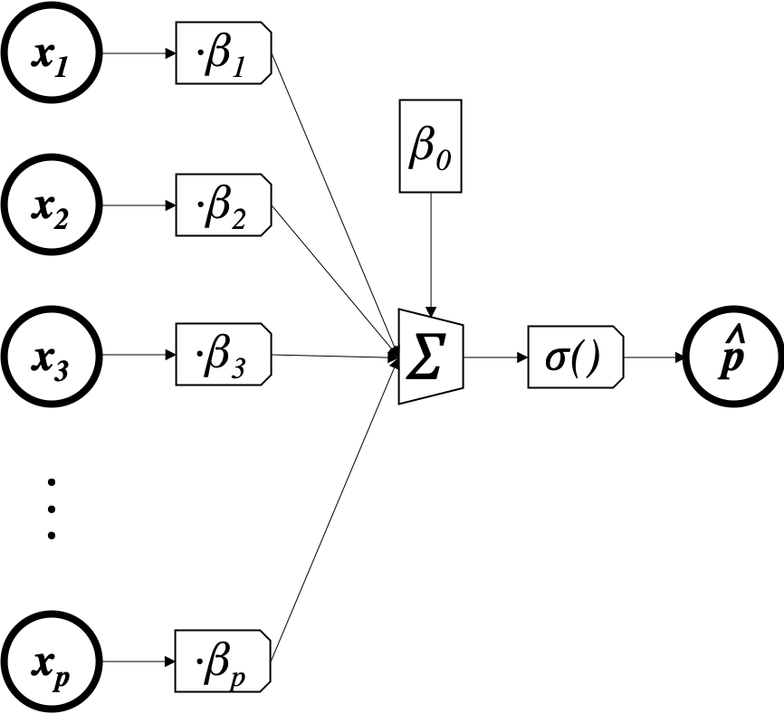

import torch
import pandas as pd
import altair as alt
from torchviz import make_dot
Now that we've seen how this works for linear regression, we can try and implement a model that predicts probabilities for a two-class outcome instead of a prediction for a continuous outcome. Now our data look like this:
n,p = 100,5
x = torch.randn(n,5) # predictors (10 observations, 5 features)
y = torch.randint(0,2,(n,), dtype=torch.float) # outcomes (10 observations)
y[0:5]
To do this, we have to change two things: firstly, our model can't be $\hat y_i = x_i\beta_{1:p} + \beta_0$ anymore because $\hat y_i$ will come out as a number between plus and minus infinity, wheras we now want it to be a number between 0 and 1 (a probability). To fix this, we'll apply a function that takes $x_i\beta_{1:p} + \beta_0$ and squishes it down to a number between 0 and 1. The function we'll use is $\sigma(z) = \frac{1}{1+e^{-z}}$, which is called the sigmoid or logistic function.

So our model will be $\hat p_i = \sigma(x_i\beta_{1:p} + \beta_0)$. The parameters are still $\beta$, but now there is an additional (fixed) squishing function that makes sure the output is a probability. In accordance, I've called the output $\hat p_i$ instead of $\hat y_i$.
As before, we can represent this model graphically:

Note that the only difference between this picture and the one before is that we've inserted $\sigma()$ right before the final output.
Our loss function from before was MSE: $\sum (\hat y_i - y_i)^2$, which compares a predicted outcome to the true outcome. One option is to replace the predicted outcome with a predicted probability to get $\sum (\hat p_i - y_i)^2$ (the Brier Score). Here's what that looks like (for a single observation $i$):

This is ok, but many people don't like that there is a maximum penalty under this loss: if the true outcome was $y_i =0$ but the model predicts $p_j = P(Y_i=1) = 1$ (i.e. $y_i =1$ with absolute certainty), then the penalty should be infinitely high to strongly discrourage this kind of overconfident (wrong) prediction. Under the Brier score, however, you can see that this kind of prediction only incurrs a loss of 1, not infinity. Furthermore, when the outcome is 1 and the prediction gets closer and closer to 1, we see that the loss "flattens out", which means that we're not encouraged to be more and more confident when we're right.
What we want is a loss function that looks like this:

This is called the log-loss (or cross-entropy loss or binomial deviance). It is expressed as
$$ L(\hat p, y) = \frac{1}{n} \sum_i \begin{cases} -\log(P(Y_i = 1)) & \text{if}\ y_i=1 \\ -\log(P(Y_i = 0)) & \text{if}\ y_i=0 \end{cases} $$which is the same as
This combination of logistic-linear model and log-loss is called logistic regression (although this is a misnomer because we're actually doing classification, not regression). The amazing thing about gradient descent is that, as long as you can differentiate through the loss and to the model parameters, it just works. Compare this code to what we did to fit our linear regression model.
x = torch.randn(n, p) # predictors (10 observations, 5 features)
y = torch.randint(0,2,(n,), dtype=torch.float) # outcomes (10 observations)
loss_record = [] # to kep track of the loss over the iterations
β = torch.randn(p+1,1) # 5 coefficients (one per feature)
β.requires_grad_() # tell torch that β is going to have to save the gradient of something with respect to itself at some point
for e in range(500):
z = torch.matmul(x, β[1:]) + β[0]
p̂ = torch.exp(-z)/(1+torch.exp(-z))
L = -torch.sum(torch.log(p̂)*y + torch.log(1-p̂)*(1-y))/n # log loss
L.backward() # compute gradients (in this case δL/δβ, δL/δW)
loss_record.append(L.item())
with torch.no_grad(): # take the gradient descent step
β -= 10e-4 * β.grad
β.grad.zero_()
loss_df = pd.DataFrame({'i':range(500), 'loss':loss_record})
alt.Chart(loss_df, height=100).mark_line().encode(x='i', y='loss')
Although the code looks pretty much the same, save the changes to the model and loss, the computation that pytorch needs to do to compute the gradient of $L$ with respect to each $\beta$ is now much more involved, which you too will see if you try to compute it by hand.
make_dot(L, {'β':β})
The amazing thing is that pytorch just handles it and you don't have to.
To predict for a new observation, all we have to do is multiply by $\beta_{1:p}$, add the intercept $\beta_0$, and pass through $\sigma$:
new_x = torch.randn(10, 5) # 10 new observations
z = torch.matmul(new_x, β[1:]) + β[0]
torch.exp(-z)/(1+torch.exp(-z)) # probability predictions
EXERCISE
Why don't we use accuracy as a loss? In other words,
$$ L(y, \hat p) = \sum_i \begin{cases} 1 & \text{if}\ y_i = 1 \ \text{and} \ \hat p_i > 0.5 \\ 1 & \text{if}\ y_i = 0 \ \text{and} \ \hat p_i \le 0.5 \\ 0 & \text{else} \end{cases} \notag $$Hint: what is the derivative of this loss with respect to any prediction $\hat p_i$?
We just developed a machine learning method out of these three components:
- linear-logistic model (model)
- log loss (loss)
- gradient descent (optimization algorithm)
This should make it clear to you that gradient descent is a widely-applicable strategy that will work with any loss or model, as long as you can define derivatives of the loss with respect to the model parameters. We will now go back to our linear regression example, but augment the model with more parameters and a more complex structure in order to capture nonlinear relationships.